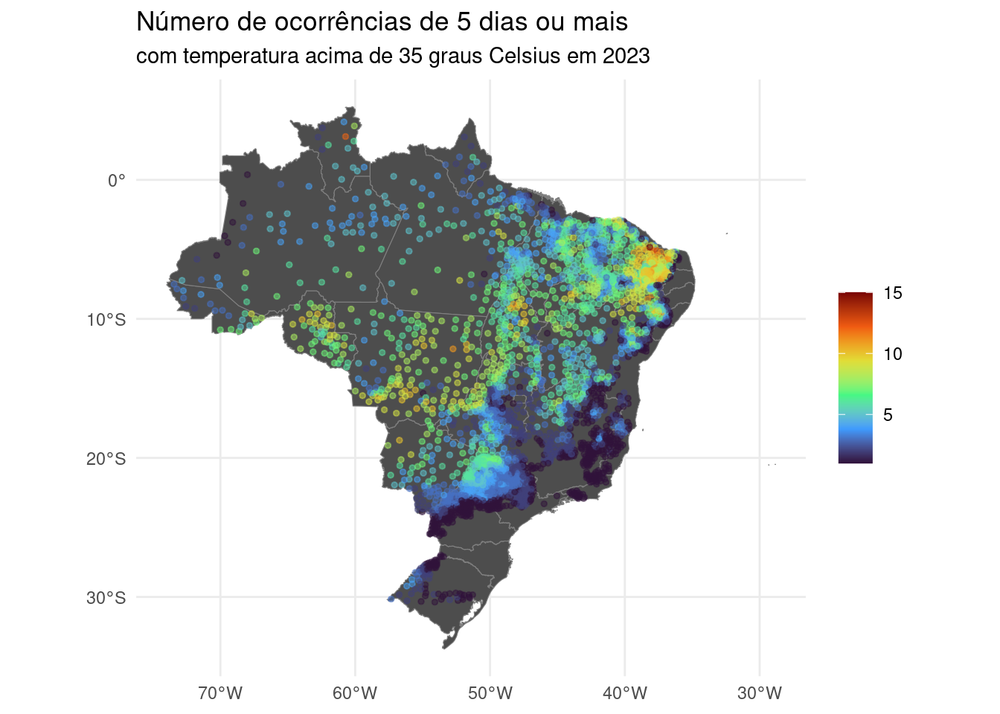
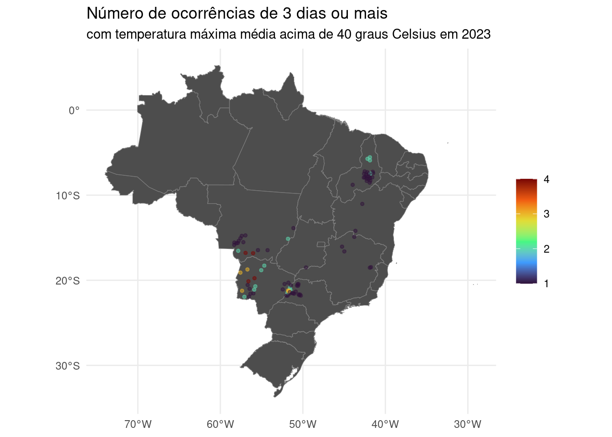

Persistent heat, or heat waves, are defined as sequences of days with temperatures above a reference value. These sequences of days of extreme heat are direct consequences of the global warming and impact the health of the inhabitants, specially those with less access to basic resources.
Let’s take a look at the occurrence of persistent heat in Brazilian municipalities in two years: 2023 and 1993 (thirty years ago).
For this, I will use the datasets of Zonal Statistics of Climate Indicators created with ERA5-Land data. More details about this dataset is available here.
Packages
Data download
We will use data about the daily average maximum temperature on Brazilian municipalities.
2023 data
1temp_max_2023 <- zen_file(10947952, "2m_temperature_max.parquet") |>
2 open_dataset() |>
3 filter(name == "2m_temperature_max_mean") |>
select(-name) |>
4 mutate(value = value - 272.15) |>
5 arrange(code_muni, date) |>
6 collect()- 1
- Download and cache parquet file from Zenodo.
- 2
- Creates a connection to the file, but do not load it to the memory. This file is pretty big.
- 3
- Keep only the average maximum temperature indicator.
- 4
- Convert from Kelvin to Celsius.
- 5
- Arrange rows by municipality code and date.
- 6
- Collect the filtered data to memory.
1993 data
temp_max_1993 <- zen_file(10036212, "2m_temperature_max.parquet") |>
open_dataset() |>
filter(name == "2m_temperature_max_mean") |>
select(-name) |>
filter(year(date) == 1993) |>
mutate(value = value - 272.15) |>
arrange(code_muni, date) |>
collect()The steps are basically the same, but we filter the 1993 data.
Persistent heat sequences
Let’s compute some persistent heat sequences for all municipalities using the dplyr::summary and the nseq::trle_cond functions.
res_2023 <- temp_max_2023 |>
summarise(
temp_3_35 = trle_cond(value, a_op = "gte", a = 3, b_op = "gte", b = 35),
temp_5_35 = trle_cond(value, a_op = "gte", a = 5, b_op = "gte", b = 35),
temp_3_40 = trle_cond(value, a_op = "gte", a = 3, b_op = "gte", b = 40),
temp_5_40 = trle_cond(value, a_op = "gte", a = 5, b_op = "gte", b = 40),
.by = code_muni
)For the year of 2023, on each municipality, we are answering these questions:
- How many times we got sequences of 3 days or more with temperatures of 35 Celsius or more?
- How many times we got sequences of 5 days or more with temperatures of 35 Celsius or more?
- How many times we got sequences of 3 days or more with temperatures of 40 Celsius or more?
- How many times we got sequences of 5 days or more with temperatures of 40 Celsius or more?
Let’s do the same with the 1993 data.
res_1993 <- temp_max_1993 |>
summarise(
temp_3_35 = trle_cond(value, a_op = "gte", a = 3, b_op = "gte", b = 35),
temp_5_35 = trle_cond(value, a_op = "gte", a = 5, b_op = "gte", b = 35),
temp_3_40 = trle_cond(value, a_op = "gte", a = 3, b_op = "gte", b = 40),
temp_5_40 = trle_cond(value, a_op = "gte", a = 5, b_op = "gte", b = 40),
.by = code_muni
)Let’s take a look first at the more extreme result: five days or more with temperatures above 40 Celsius degrees.
On 2023, 14 municipalities presented those conditions. This conditions of extreme heat occurred 4 times at the municipality of Barão de Melgaço, MT. On 1993, these conditions did not occur on any municipality.
Maps
library(geobr)
library(sf)
library(viridisLite)
uf <- read_state(showProgress = FALSE)
coords <- read_municipality(showProgress = FALSE) %>%
st_make_valid() %>%
st_centroid()res_2023_map <- left_join(coords, res_2023, by = "code_muni") |>
drop_na()
res_1993_map <- left_join(coords, res_1993, by = "code_muni") |>
drop_na()ggplot() +
geom_sf(data = uf, fill = "grey30", color = "grey50", size=.15, show.legend = FALSE) +
geom_sf(data = subset(res_2023_map, temp_3_35 > 0), aes(color = temp_3_35), size = 1, alpha = 0.5) +
scale_colour_viridis_c(option = "turbo") +
theme_minimal() +
labs(title = "Número de ocorrências de 3 dias ou mais ", subtitle = "com temperatura máxima média acima de 35 graus Celsius em 2023", color = NULL)
ggplot() +
geom_sf(data = uf, fill = "grey30", color = "grey50", size=.15, show.legend = FALSE) +
geom_sf(data = subset(res_1993_map, temp_3_35 > 0), aes(color = temp_3_35), size = 1, alpha = 0.5) +
scale_colour_viridis_c(option = "turbo") +
theme_minimal() +
labs(title = "Número de ocorrências de 3 dias ou mais ", subtitle = "com temperatura máxima média acima de 35 graus Celsius em 1993", color = NULL)
ggplot() +
geom_sf(data = uf, fill = "grey30", color = "grey50", size=.15, show.legend = FALSE) +
geom_sf(data = subset(res_2023_map, temp_5_35 > 0), aes(color = temp_5_35), size = 1, alpha = 0.5) +
scale_colour_viridis_c(option = "turbo") +
theme_minimal() +
labs(title = "Número de ocorrências de 5 dias ou mais", subtitle = "com temperatura máxima média acima de 35 graus Celsius em 2023", color = NULL)
ggplot() +
geom_sf(data = uf, fill = "grey30", color = "grey50", size=.15, show.legend = FALSE) +
geom_sf(data = subset(res_1993_map, temp_5_35 > 0), aes(color = temp_5_35), size = 1, alpha = 0.5) +
scale_colour_viridis_c(option = "turbo") +
theme_minimal() +
labs(title = "Número de ocorrências de 5 dias ou mais", subtitle = "com temperatura máxima média acima de 35 graus Celsius em 1993", color = NULL)
ggplot() +
geom_sf(data = uf, fill = "grey30", color = "grey50", size=.15, show.legend = FALSE) +
geom_sf(data = subset(res_2023_map, temp_3_40 > 0), aes(color = temp_3_40), size = 1, alpha = 0.5) +
scale_colour_viridis_c(option = "turbo") +
theme_minimal() +
labs(title = "Número de ocorrências de 3 dias ou mais", subtitle = "com temperatura máxima média acima de 40 graus Celsius em 2023", color = NULL)
ggplot() +
geom_sf(data = uf, fill = "grey30", color = "grey50", size=.15, show.legend = FALSE) +
geom_sf(data = subset(res_1993_map, temp_3_40 > 0), aes(color = temp_3_40), size = 1, alpha = 0.5) +
scale_colour_viridis_c(option = "turbo") +
theme_minimal() +
labs(title = "Número de ocorrências de 3 dias ou mais", subtitle = "com temperatura máxima média acima de 40 graus Celsius em 1993", color = NULL)
ggplot() +
geom_sf(data = uf, fill = "grey30", color = "grey50", size=.15, show.legend = FALSE) +
geom_sf(data = subset(res_2023_map, temp_5_40 > 0), aes(color = temp_5_40), size = 1, alpha = 0.5) +
scale_colour_viridis_c(option = "turbo") +
theme_minimal() +
labs(title = "Número de ocorrências de 5 dias ou mais", subtitle = "com temperatura máxima média acima de 40 graus Celsius em 2023", color = NULL)ggplot() +
geom_sf(data = uf, fill = "grey30", color = "grey50", size=.15, show.legend = FALSE) +
geom_sf(data = subset(res_1993_map, temp_5_40 > 0), aes(color = temp_5_40), size = 1, alpha = 0.5) +
scale_colour_viridis_c(option = "turbo") +
theme_minimal() +
labs(title = "Número de ocorrências de 5 dias ou mais", subtitle = "com temperatura máxima média acima de 40 graus Celsius em 1993", color = NULL)
Session info
sessioninfo::session_info()─ Session info ───────────────────────────────────────────────────────────────
setting value
version R version 4.3.3 (2024-02-29)
os Ubuntu 22.04.4 LTS
system x86_64, linux-gnu
ui X11
language en_US:en
collate en_US.UTF-8
ctype en_US.UTF-8
tz Europe/Paris
date 2024-04-22
pandoc 3.1.1 @ /usr/lib/rstudio/resources/app/bin/quarto/bin/tools/ (via rmarkdown)
─ Packages ───────────────────────────────────────────────────────────────────
package * version date (UTC) lib source
arrow * 15.0.1 2024-03-12 [1] CRAN (R 4.3.3)
assertthat 0.2.1 2019-03-21 [1] CRAN (R 4.3.1)
backports 1.4.1 2021-12-13 [1] CRAN (R 4.3.1)
bit 4.0.5 2022-11-15 [1] CRAN (R 4.3.1)
bit64 4.0.5 2020-08-30 [1] CRAN (R 4.3.1)
checkmate 2.3.1 2023-12-04 [1] CRAN (R 4.3.2)
class 7.3-22 2023-05-03 [4] CRAN (R 4.3.1)
classInt 0.4-10 2023-09-05 [1] CRAN (R 4.3.1)
cli 3.6.2 2023-12-11 [1] CRAN (R 4.3.2)
colorspace 2.1-0 2023-01-23 [1] CRAN (R 4.3.1)
curl 5.2.1 2024-03-01 [1] CRAN (R 4.3.3)
data.table 1.15.4 2024-03-30 [1] CRAN (R 4.3.3)
DBI 1.2.2 2024-02-16 [1] CRAN (R 4.3.2)
digest 0.6.35 2024-03-11 [1] CRAN (R 4.3.3)
dplyr * 1.1.4 2023-11-17 [1] CRAN (R 4.3.2)
e1071 1.7-14 2023-12-06 [1] CRAN (R 4.3.2)
evaluate 0.23 2023-11-01 [1] CRAN (R 4.3.1)
fansi 1.0.6 2023-12-08 [1] CRAN (R 4.3.2)
farver 2.1.1 2022-07-06 [1] CRAN (R 4.3.1)
fastmap 1.1.1 2023-02-24 [1] CRAN (R 4.3.1)
forcats * 1.0.0 2023-01-29 [1] CRAN (R 4.3.1)
fs 1.6.3 2023-07-20 [1] CRAN (R 4.3.1)
generics 0.1.3 2022-07-05 [1] CRAN (R 4.3.1)
geobr * 1.9.0 2024-04-18 [1] CRAN (R 4.3.3)
ggplot2 * 3.5.0 2024-02-23 [1] CRAN (R 4.3.2)
glue 1.7.0 2024-01-09 [1] CRAN (R 4.3.2)
gtable 0.3.4 2023-08-21 [1] CRAN (R 4.3.1)
hms 1.1.3 2023-03-21 [1] CRAN (R 4.3.1)
htmltools 0.5.8.1 2024-04-04 [1] CRAN (R 4.3.3)
htmlwidgets 1.6.4 2023-12-06 [1] CRAN (R 4.3.2)
httr 1.4.7 2023-08-15 [1] CRAN (R 4.3.1)
jsonlite 1.8.8 2023-12-04 [1] CRAN (R 4.3.2)
KernSmooth 2.23-22 2023-07-10 [4] CRAN (R 4.3.1)
knitr 1.46 2024-04-06 [1] CRAN (R 4.3.3)
labeling 0.4.3 2023-08-29 [1] CRAN (R 4.3.1)
lifecycle 1.0.4 2023-11-07 [1] CRAN (R 4.3.2)
lubridate * 1.9.3 2023-09-27 [1] CRAN (R 4.3.1)
magrittr 2.0.3 2022-03-30 [1] CRAN (R 4.3.1)
munsell 0.5.1 2024-04-01 [1] CRAN (R 4.3.3)
nseq * 0.0.1 2024-04-22 [1] local
pillar 1.9.0 2023-03-22 [1] CRAN (R 4.3.1)
pkgconfig 2.0.3 2019-09-22 [1] CRAN (R 4.3.1)
proxy 0.4-27 2022-06-09 [1] CRAN (R 4.3.1)
purrr * 1.0.2 2023-08-10 [1] CRAN (R 4.3.1)
R6 2.5.1 2021-08-19 [1] CRAN (R 4.3.1)
Rcpp 1.0.12 2024-01-09 [1] CRAN (R 4.3.2)
readr * 2.1.5 2024-01-10 [1] CRAN (R 4.3.2)
rlang 1.1.3 2024-01-10 [1] CRAN (R 4.3.2)
rmarkdown 2.26 2024-03-05 [1] CRAN (R 4.3.3)
rstudioapi 0.16.0 2024-03-24 [1] CRAN (R 4.3.3)
s2 1.1.6 2023-12-19 [1] CRAN (R 4.3.2)
scales 1.3.0 2023-11-28 [1] CRAN (R 4.3.2)
sessioninfo 1.2.2 2021-12-06 [1] CRAN (R 4.3.1)
sf * 1.0-16 2024-03-24 [1] CRAN (R 4.3.3)
stringi 1.8.3 2023-12-11 [1] CRAN (R 4.3.2)
stringr * 1.5.1 2023-11-14 [1] CRAN (R 4.3.2)
tibble * 3.2.1 2023-03-20 [1] CRAN (R 4.3.1)
tidyr * 1.3.1 2024-01-24 [1] CRAN (R 4.3.2)
tidyselect 1.2.1 2024-03-11 [1] CRAN (R 4.3.3)
tidyverse * 2.0.0 2023-02-22 [1] CRAN (R 4.3.1)
timechange 0.3.0 2024-01-18 [1] CRAN (R 4.3.2)
tzdb 0.4.0 2023-05-12 [1] CRAN (R 4.3.1)
units 0.8-5 2023-11-28 [1] CRAN (R 4.3.2)
utf8 1.2.4 2023-10-22 [1] CRAN (R 4.3.1)
vctrs 0.6.5 2023-12-01 [1] CRAN (R 4.3.2)
viridisLite * 0.4.2 2023-05-02 [1] CRAN (R 4.3.1)
withr 3.0.0 2024-01-16 [1] CRAN (R 4.3.2)
wk 0.9.1 2023-11-29 [1] CRAN (R 4.3.2)
xfun 0.43 2024-03-25 [1] CRAN (R 4.3.3)
yaml 2.3.8 2023-12-11 [1] CRAN (R 4.3.2)
zendown * 0.1.0 2024-04-15 [1] local
[1] /home/raphael/R/x86_64-pc-linux-gnu-library/4.3
[2] /usr/local/lib/R/site-library
[3] /usr/lib/R/site-library
[4] /usr/lib/R/library
──────────────────────────────────────────────────────────────────────────────